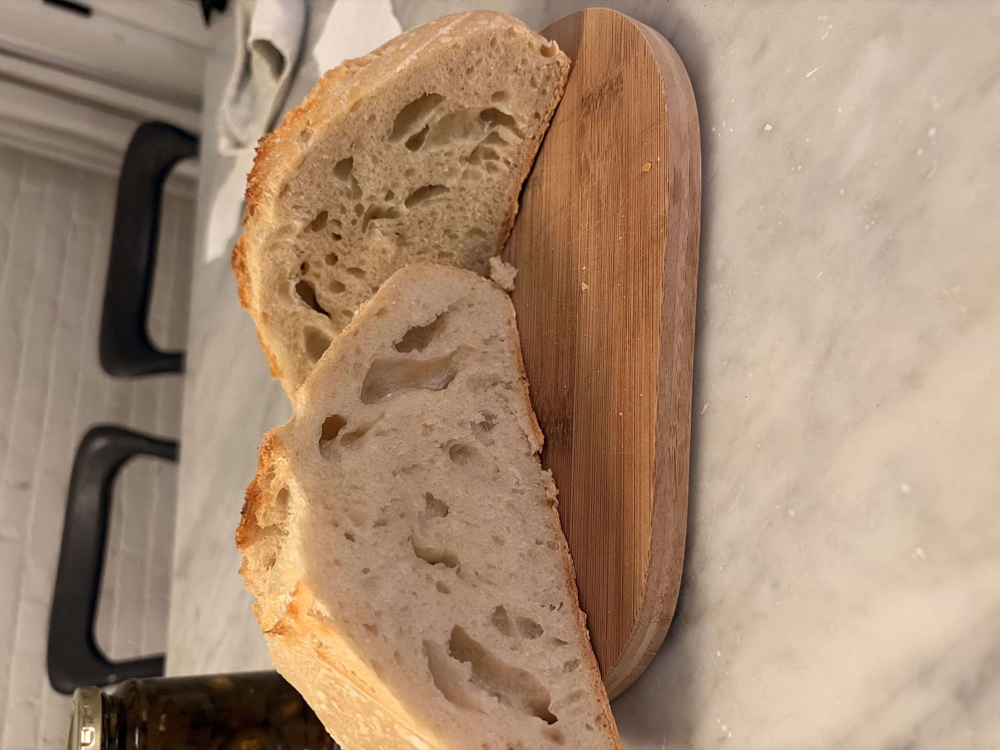

One of my favorite activities that I have been doing in my free time recently has been making sourdough bread! Ever since moving out of the dorms on campus and into an apartment with a kitchen, I've enjoyed cooking and baking and experimenting with new recipes each week! One recipe I would consistently make was a super easy bread recipe. From my aunt, the recipe is as follows:
Recently, I decided to try my hand at making sourdough bread. Making sourdough bread is unique from baking other types of breads or baked goods because it requires you to use a live, active sourdough starter as your yeast. Sourdough starter is essentially made up of flour, water, and live bacteria. You have to 'feed' it water and flour in order for it to stay healthy, and there are specific times during this feeding cycle when it is best to use your starter in a recipe. The best time to use your starter is when it is 'peaking', which is when the starter is at it's point of maximum activity and volume. For me, this is approximately 3-4 hours after I feed my starter.

Once your starter is ready, making your sourdough load is still a long process of love and patience. Below is one of the recipes that I've found works best for me! I've included some photos of my most recent loaf using this recipe above.